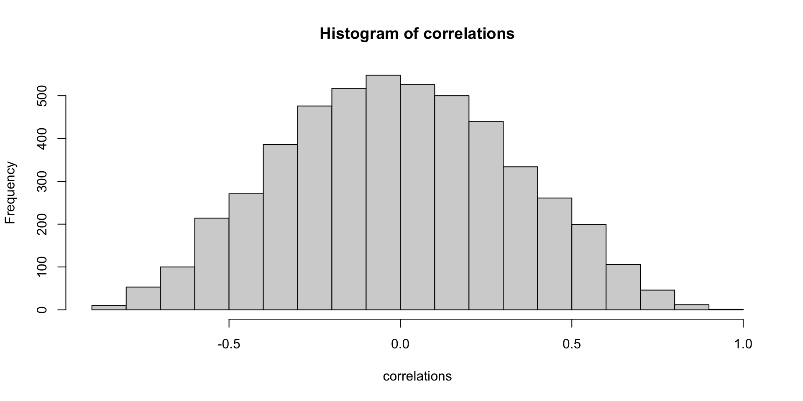
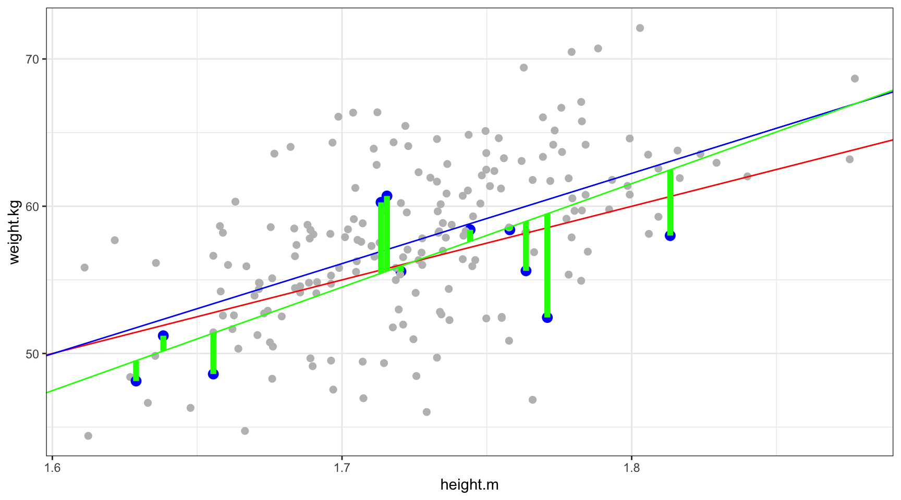
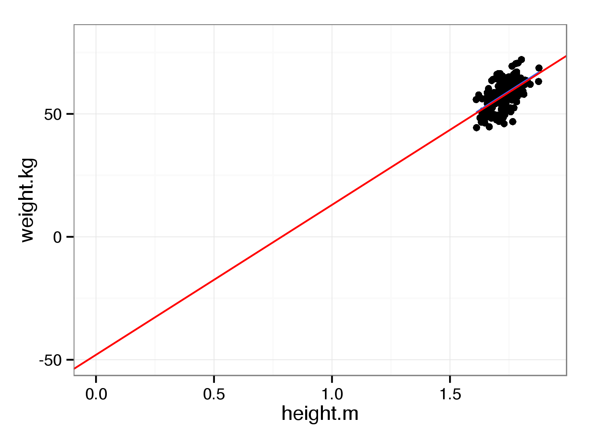

Introduction to linear regression
PSY-8003: Multivariate kvantitative forskningsmetoder
Matthias Mittner
Institute for Psychology
v2022
Organizational
- 5 days intensive course
- mornings: lectures (9-12)
- day 1-4 physical lectures (here)
- day 5 zoom-lecture
- afternoons: exercises/seminar (13-16)
- Zoom-links and all other material on Blackboard
- assistant: Ane-Kristine Øien Dyrvik (akdyrvik@ntnu.no)
- Questions welcome!
- physical whenever you can catch me!
- matthias.mittner@ntnu.no
- BlackBoard
Outline
- Intro: Relationships between variables
- correlation vs. causation
- significance testing
- Basics of Linear regression
- estimation (OLS)
- coefficients
- interpretation
- effect-sizes
- Multiple linear regression
Relationships…
- often, we are looking for relationships between variables
- what’s a variable?
- what’s a relationship?
Relationships…
Statistical relationship: When one thing goes up, something else does too…
Examples
Positive relationships:
- number of training sessions and running speed
- number of hours studying and grade in stats exam
- size of leg and size of arm of the same person
Negative relationships:
- number of training sessions and body-fat
- number of hours studying and errors in stats exam
- proficiency of driving a car and number of car crashes
Correlations quantify relationships
- need a quantitative measure of the degree of “relatedness”
- the clearer the relationship, the higher the correlation
- positive value for positive relationship
- negative value for negative relationship
Variance and Covariance
\[\mbox{Variance}=\frac{\sum(x_i-\bar{x})^2}{n-1}=\frac{\sum(x_i-\bar{x})(x_i-\bar{x})}{n-1}\]
\[\mbox{Covariance}=\frac{\sum(x_i-\bar{x})(y_i-\bar{y})}{n-1}\]
- illustration only, not mathematically precise!
Covariance\(=\frac{\sum(x_i-\bar{x})(y_i-\bar{y})}{n-1}\)
- Problem: Covariance depends on variable’s scale
- Solution: Z-transform variables!
Pearson’s product-moment correlation coefficient \(r\)
The covariance of two Z-transformed variables
\(x,y\) raw variables:
\[ r=\frac{\sum\limits_{i=1}^n (x_i-\bar{x})(y_i-\bar{y})}{(n-1)s_x s_y} \]
- \(n\) number of samples
- \(\bar{x},\bar{y}\) mean of variable \(x,y\)
- \(s_x,s_y\) standard deviation of \(x,y\)
- \(x_i,y_i\) each of the individual datapoints
\(x,y\) Z-transformed variables:
\[ r=\frac{\sum\limits_{i=1}^n x_iy_i}{n-1} \]
- \(\bar{x}=0,\bar{y}=0\)
- \(s_x=1,s_y=1\)
Correlations quantify relationships
Correlations… some intuition
Correlation - more intuition

Correlation and Causation

The same is true for linear regression!
Correlation and Causation

Correlation and Causation: Ice-cream and Shark-attacks
- Ice-cream consumption and number of shark attacks highly correlated!
Ice-cream \(\leftrightarrow\) shark-attacks?
Confounding variable?
More general: Correlations and Causation
if variable \(X\) and \(Y\) are correlated…
- \(X\rightarrow Y\) (X causes Y)
- \(Y\rightarrow X\) (Y causes X)
- \(X\leftarrow Z \rightarrow Y\) (X and Y are both caused by Z)
Example Correlations…
\(X\rightarrow Y\), \(Y\rightarrow X\) or \(X\leftarrow Z \rightarrow Y\)?
- The more firemen are sent to a fire, the more damage is done.
- Children who get tutored get worse grades than children who do not get tutored
- In the early elementary school years, astrological sign is correlated with IQ, but this correlation weakens with age and disappears by adulthood.
Correlation and Causation
- A Correlation a Day…
- http://tylervigen.com/spurious-correlations
Correlation and Causation

- is relative “time of occurence” always an indicator of causality?
Significance tests for correlations
- \(r\) is an estimate for the population parameter \(\rho\)
- how do we know that a correlation is “significant”?
- correlation can be
- a result of chance alone
- a result of a different, underlying variable
- significance testing determines whether chance can have produced correlation
Demo: Random correlations
Demo: Random correlations
Significance tests for correlations
- correlation coefficients under null-hypothesis not normally distributed
- use Fisher-Z transform \[z_r=\frac{1}{2}\log\left(\frac{1+r}{1-r}\right)\]
- with standard-error: \[SE_z = \frac{1}{\sqrt{N-3}}\]
- or t-test: \[t=\frac{r\sqrt{N-2}}{\sqrt{1-r^2}}\]
Correlations are fundamental for…
- regression analysis
- contribution of each variable, effect-size, …
- factor analysis
- find underlying factors by pattern of correlations
- structural equation modelling
- path-models, model comparison, …
- meta-analyses
Linear Regression and Correlations
- related analyses methods
- used in similar situations: find a relationship bw two variables
- correlation applies only to two variables, regression more general
- regression: focus on prediction
- express linear relationship between variables
What is a linear relationship?
How old are you?
You are 9 years younger than your sister.
How can you calculate your sister’s age (given that you know your own)?
\[\tt{sister.age} = 9+1.0\times\tt{my.age}\]
- when you were born, your sister was 9 years old \(\rightarrow\)
intercept=9 - for each of your years, your sister grows older by one year \(\rightarrow\)
slope=1.0
\(\rightarrow\) we can predict how old your sister is going to be when you reach 50
\(\rightarrow\) this is a deterministic linear relationship (there is no uncertainty)
What is a linear relationship?
How heavy are you?
A person’s weight and height are related (taller persons are usually heavier than smaller persons).
\[\tt{weight} = -48+61\times\tt{height}\]
- persons who are 0.0 m tall have a weight of -48 kg (??)
- for each meter, a persons weight grows by 61 kg
\(\rightarrow\) we can predict a person’s weight if we know their height (but imperfectly!)
\(\rightarrow\) this is a stochastic (statistical) relationship!
How do we get the line?
How do we get the line?
Exercise: Draw the line
Exercise: Solution
Sum up the sticks
Sum up the sticks
Sum up the sticks
Sum up the sticks

Sum up the squares!
Sum up the squares!
Sum up the squares!
Sticks = Residuals
- the sticks are called residuals
- we want a line so that the sum of the residuals becomes small
- usually use: sum of squared residuals (“ordinary least squares”)
Formally: \[\mbox{Sum-of-squares} = \left[{Y} - \mbox{Line}(x)\right]^2 \rightarrow \mbox{ minimal}\]
\(\rightarrow\) Recipe: try many different lines and use the one with least sum of squares (we don’t have to actually do that, because we can calculate the optimal line)
The (general) linear model
observed = predicted + error
\[ \color{blue}{Y_i} = \color{green}{\beta_0 + \beta_1 X_i} + \color{red}{\varepsilon_i} \]
\[ E[\color{blue}{Y_i}] = \color{green}{\beta_0 + \beta_1 X_i} \]
Example
\[\tt{\color{blue}{weight}_i} = \color{green}{-48+61\times\tt{height}_i} + \color{red}{\tt{residual}_i}\] \[\text{Mean}(\tt{\color{blue}{weight}}) = \color{green}{-48+61\times\tt{height}}\]
The (general) linear model
Ordinary least squares
- sample equation: \(\hat{Y}_i=\hat{\beta}_0+\hat{\beta}_1X_i\)
- residuals: \(\hat{\varepsilon}_i = Y_i - \hat{Y}_i\)
- OLS: \(\min_{\beta_0,\beta_1}\sum_i \hat{\varepsilon}_i^2\)
Interpretation of the Intercept

- “where the line hits zero”
- \(\tt{weight} = -48+61\times\tt{height}\)
- centering of the variable: intercept=value at group’s mean
- \(\tt{weight} = 58+61\times[\tt{height}-\text{mean}(\tt{height})]\)
Interpretation of the Slope
- “by how much changes \(y\) for a change in \(x\)”?
- \(\tt{weight} = -48+61\times\tt{height.m}\)
- re-scaling variable makes it more intuitive, e.g., height in cm:
- \(\tt{weight} = 58+6.1\times\tt{height.cm}\)
- standardized coefficients (\(\beta\)): \(\tt{weight.z} = 0 + 0.55\times\tt{height.z}\)
Demo
<unamur-regression-lineaire-module20.swf>
Goodness of fit
How well can we predict values?
- Standard-deviation of the residuals
- Coefficient of determination \(R^2\)
Standard deviation of the residuals
\[\hat{\sigma}_{\varepsilon}^2 = \frac{\sum\hat\varepsilon^2}{n-1} \Rightarrow \hat{\sigma}_{\varepsilon} = \sqrt{\frac{\sum\hat\varepsilon^2}{n-1}}\]
\(R^2\)
\[R^2=\frac{\text{ESS}}{\text{TSS}}=1-\frac{\text{RSS}}{\text{TSS}}\]

\[R^2=\frac{\text{ESS}}{\text{TSS}}=1-\frac{\text{RSS}}{\text{TSS}}\]
Variability in regression
Do all the predictors help to explain the outcome or is only a subset of the predictors useful?
- how far away from the true regression line do the actual datapoints fall?
- how well did we approximate the true regression line with our estimate?
Confidence intervals vs. prediction intervals
- Confidence Interval (CI): estimate of where the true regression line is, \(E[Y|X]\)
- Prediction Interval (PI): estimate of where new datapoints are going to fall
Why is there uncertainty about the regression line?
- regression line is an estimate of the population regression function \[E[Y]=\beta_0 + \beta_1 X\]
- we measure function from sample \[E[Y]=\hat{\beta}_0 + \hat{\beta}_1 X\]
- were we to repeat sampling, we would get (slightly) different estimates \(\hat{\beta}\) while the true \(\beta\) is unchanged!
Stata
set obs 20
* generate random values for the predictor
generate x = rnormal(0,1)
* create an artificial dataset with true b0=2.5 and b1=4.3
generate y = 2.5 + 4.3 * x + rnormal(0,1)
* how well can we recover those "true" values with a regression?
regress y x Source | SS df MS Number of obs = 20
-------------+---------------------------------- F(1, 18) = 580.29
Model | 567.854904 1 567.854904 Prob > F = 0.0000
Residual | 17.6143639 18 .978575772 R-squared = 0.9699
-------------+---------------------------------- Adj R-squared = 0.9682
Total | 585.469268 19 30.814172 Root MSE = .98923
------------------------------------------------------------------------------
y | Coefficient Std. err. t P>|t| [95% conf. interval]
-------------+----------------------------------------------------------------
x | 4.316554 .1791908 24.09 0.000 3.940088 4.69302
_cons | 2.599046 .22413 11.60 0.000 2.128166 3.069926
------------------------------------------------------------------------------R
Confidence intervals for regression coefficients
Definition 95% CI
“If we were to collect data from many more samples and would calculate the CI with the same procedure in each of them, 95% of those intervals would contain the true (population) value of the parameter.”
- NOT: “The CI is the interval that contains the true value with 95% probability.”!
- the CI gives us an idea about the precision with which we have measured the coefficients
- mathematically, CIs are significance tests…
Significance testing of regression coefficients
Question: Is coefficient significantly different from zero?
- Null-hypothesis \(H_0: \beta = 0\)
- Alternative hypothesis \(H_1: \beta \ne 0\)
Significance testing of regression coefficients
Again:
- estimated slope-coefficients \(\hat{\beta}_0, \hat{\beta}_1, ...\) have a sampling distribution
- centered on the true slopes \(\beta_0, \beta_1, ...\)
- the standard deviation of this sampling distribution is the standard error (SE)
- the SE can be used to calculate CIs and to run significance tests
\(t\)-test for regression coefficients
- according to the \(H_0\), the \(\hat{\beta}\) values should be close to zero
- how close? Normally distributed around zero with SD=SE (standard error)
- because we have to estimate the SE from the sample, the actual distribution is following a \(t\)-distribution with \(n-K\) degrees of freedom
- for any observed \(t\) value \(t_{\text{obs}}\), we can calculate the probability to observe this large a value \(\rightarrow\) \(p\)-value
Multiple linear regression
observed = predicted + error
\[ \color{blue}{Y} = \color{green}{\beta_0 + \beta_1x_1 + \ldots + \beta_mx_m} + \color{red}{\epsilon}\]
Example: IQ
\[\color{blue}{\tt{IQ}} = \color{green}{\tt{intercept} + \beta_1\times\tt{age} +\beta_2\times\tt{education}} + \color{red}{\tt{error}}\]
Example: Procrastination
\[\color{blue}{\tt{IPS}} = \color{green}{\tt{intercept} + \beta_1\times\tt{time of day} + \beta_2\times\tt{age}+\beta_3\times\tt{sex}} + \color{red}{\tt{error}}\]
Multiple linear regression

- instead of a line, we now have a plane (``hyperplane’’)
- \(\tt{ice.cream} = \beta_0 + \beta_1\times\tt{income} + \beta_2\times\tt{temperature}\)
- there is still a single intercept, and a slope for each variable
- as long as the predictors are uncorrelated, that’s fine…
Finding the hyperplane
Some important questions
- Is at least one of the predictors useful in predicting the response?
- \(F\)-test, \(R^2\), \(R^2_\text{adj}\)
- Do all the predictors help to explain the outcome or is only a subset of the predictors useful?
- stepwise variable selection, model comparison
- How well does the model fit the data?
- \(R^2\), predictive plots
- Given a set of predictor values, what response value should we predict, and how accurate is our prediction?
- prediction of novel values based on covariates
Omnibus \(F\)-Test
Is at least one of the predictors useful in predicting the response?
- is the variance explained by the model more than we would expect by chance?
- \(H_0:\) the model is no better than just using the overall mean
- \(H_1:\) the model explains the data better than using the mean
- informally: “is at least one of the predictors important?”
Omnibus \(F\)-Test
Therefore:
- have to compare the variance explained by model with residual variance (ESS, RSS)
- using the \(F\)-test: models the sampling distribution of the ratio of two variances
\[F_{\text{df}_1,\text{df}_2}=\frac{R^2/(K-1)}{(1-R^2)/(n-K)} = \frac{\text{Mean square error (model)}}{\text{Mean square error (residuals)}}\]
Sampling distribution
Sampling distribution
Population vs. sample
Sampling distribution
Population vs. sample
Sampling distribution
Sampling distribution of the variance
- the variance calculated from each sample has a sampling distribution (calculated across samples)
- this distribution follows the shape of an \(F\)-distribution
F-test: flat.dta
Stata
Source | SS df MS Number of obs = 95
-------------+---------------------------------- F(2, 92) = 70.06
Model | 2.8078e+12 2 1.4039e+12 Prob > F = 0.0000
Residual | 1.8437e+12 92 2.0040e+10 R-squared = 0.6036
-------------+---------------------------------- Adj R-squared = 0.5950
Total | 4.6515e+12 94 4.9484e+10 Root MSE = 1.4e+05
------------------------------------------------------------------------------
flat_price | Coefficient Std. err. t P>|t| [95% conf. interval]
-------------+----------------------------------------------------------------
floor_size | 5209.168 451.5463 11.54 0.000 4312.358 6105.978
location | -11365.17 10885.58 -1.04 0.299 -32984.87 10254.53
_cons | 156146.1 50187.98 3.11 0.002 56468.42 255823.7
------------------------------------------------------------------------------F-test: flat.dta
R
Call:
lm(formula = flat_price ~ floor_size + location, data = flat)
Residuals:
Min 1Q Median 3Q Max
-240372 -72682 -22084 53669 999903
Coefficients:
Estimate Std. Error t value Pr(>|t|)
(Intercept) 156146.1 50188.0 3.111 0.00248 **
floor_size 5209.2 451.5 11.536 < 2e-16 ***
location -11365.2 10885.6 -1.044 0.29919
---
Signif. codes: 0 '***' 0.001 '**' 0.01 '*' 0.05 '.' 0.1 ' ' 1
Residual standard error: 141600 on 92 degrees of freedom
Multiple R-squared: 0.6036, Adjusted R-squared: 0.595
F-statistic: 70.06 on 2 and 92 DF, p-value: < 2.2e-16- this procedure is also called analysis of variance (ANOVA)
- independent of number of predictors, complexity of model, …
\(F\)? \(p\)?
- variances er estimated from sample
- \(F=\frac{MS_{model}}{MS_{residual}}\)
- \(F\) is the test-statistic
- in the case that variances “residual” and “model” are exactly the same, \(F=1\)
- because of the sampling error, \(F\) follows a sampling distribution
- this distribution depends on
- number of predictor variables (more predictors, higher explained variance)
- number of subjects per group (more subjects, higher precision)
What the hell is \(F\)?
- if \(H_0\) is true \(\rightarrow\) F-value distributed according to \(F\)-distribution with parameters \(df_{model}\) og \(df_{residual}\)
- \(p\)-value: What is the probability to observe an F-value this large if the \(H_0\) is correct?
Example for F-distribution and p-value
We have collected data with 4 predictors with \(N=400\).
- \(df_{model}=4-1=3\) og
- \(df_{residual}=N-4=396\)
Example for F-distribution and p-value
We have collected data with 4 predictors with \(N=400\).
- Study 1: F=0.5
\(\rightarrow\) \(p\)-value\(=0.69\)
Example for F-distribution and p-value
We have collected data with 4 predictors with \(N=400\).
- Study 2: F=1.0
\(\rightarrow\) \(p\)-value\(=0.39\)
Example for F-distribution and p-value
We have collected data with 4 predictors with \(N=400\).
- Study 3: F=2.0
\(\rightarrow\) \(p\)-value\(=0.11\)
Example for F-distribution and p-value
We have collected data with 4 predictors with \(N=400\).
- Study 4: F=3.0
\(\rightarrow\) \(p\)-value\(=0.03\)
Example for F-distribution and p-value
We have collected data with 4 predictors with \(N=400\).
- Result: ?
\(\rightarrow\) \(p\)-value\(=\)area under the F-distribution at least as large as the observed F-value.
Summary
What are \(F\) and \(p\)?
F-value
A value summarizing the relationship between explained and residual variances. It is called \(F\) because it follows an F-distribution if \(H_0\) holds (i.e., there is no effect).
p-value
Probability to observe an F-value that is at least as large as the one that was found in the study if \(H_0\) is correct and there is no effect.